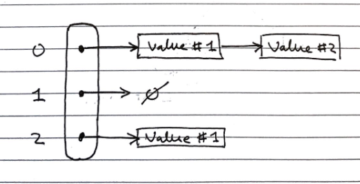

Maps (ADT)
Maps are a “searchable collection of key-value entries”
Data Structures and Algorithms in Java, Goodrich, Tamassia, Goldwasser.
They cannot contain duplicate keys, as then they would not be able to unambiguously look up values by their keys
Maps have the fundamental operations:
| Fundamental operation | Value returned | Effect |
|---|---|---|
| contains(k) | Whether the key k is in the map |
- |
| get(k) | The value associated with the key k, or null if it is not in the map |
- |
| put(k,v) | - | Add the key-value pair k,v to the map |
| remove(k) | - | Remove the key-value pair of k from the map |
| size() | The number of key-value pairs stored in the map | - |
| isEmpty() | Whether the map is empty | - |
Sometimes additional operations for getting lists of all keys or all values are included
There are two common concrete implementations:
- List based implementation
- \(O(n)\) lookup and insertion, as the whole list needs to be iterated over to check for duplicates
- \(O(n)\) space complexity, as there are no duplicates
- Hash table based implementation
- \(O(1)\) lookup and insertion time, as they can be directly indexed
- \(O(k \cdot n)\) space complexity (still linear with number of items, but larger by a big constant factor)
Hash tables
Concrete implementation
Hash tables are a time efficient implementation of the Map abstract data type
To look up keys in \(O(1)\) time, we want essentially want to be able to index an array of them, but the space of keys are far too large to conceivably keep just one element in the array for each key.
Hash functions
We can use a “hash function” to reduce the size of the keyspace, so we can used the hashed outputs of keys for indices in the array storing the map. \(h : keys \rightarrow indices\) \(h\) maps keys of a given type to integers in a fixed interval \([0, N-1]\) where \(N\) is the size of the array to store the items in (bucket size).
Modern implementations of hash functions are very complicated, and often involve two phases
- Mapping keys to integers with a hash code \(h_1\)
- Reducing the range of those integers with a compression function \(h_2\)
But simpler ones exist, for example \(h(x) = x \!\!\mod \!N\)
Choosing \(N\)
In general, every key \(x\) that shares a common factor with \(N\) (the number of buckets) will be hashed to a multiple of this factor.
Therefore, to minimise collisions it is best to choose a \(N\) such that it has very few factors. Hence large prime numbers are often used for this very reason.
Memory address
Java implements hash functions for all objects with the .hashCode() method, giving a convenient way to implement hashing.
The .hashCode() method is dependent on the memory address of the object storing the key, which is then cast to an integer. This then may be resized using a reduction function to map it to the correct size of the table may still be required.
Integer cast
Taking the bits encoding the object storing the key, and re-interpreting them as an integer. This is only suitable for keys of fewer or equal to the number of bits in the integer type (i.e. primitives: byte, short, int, float)
Component sum
The process is:
- Partition the bits of the key into a number of fixed length components (e.g. 8 bits)
- Sum together the components, discarding overflows
This is suitable for keys of a greater number of bits than the integer type (e.g. long and double)
Polynomial accumulation
The process is:
-
Partition the bits of the key into a number of fixed length components (e.g. 8 bits), and name them \(a_0, a_1, ..., a_{n-1}\) respectively
-
Evaluate the polynomial: \(p(z) = a_0 + a_1 \cdot z + a_2 \cdot z^2 + ... + a_{n-1} \cdot z^{n-1}\) at a fixed value \(z\), ignoring overflows
This can be evaluated quickly using Horner’s rule
This is especially suitable for strings, with \(z=33\) giving at most \(6\) collisions from \(50,000\) English words
Java hash implementations
Java implements hash functions for all objects with the .hashCode() method, giving a convenient way to implement hashing, but a reduction function to map it to the correct size of the table may still be required.
Additionally, “You must override hashCode() in every class that overrides equals(). Failure to do so will result in a violation of the general contract for Object.hashCode(), which will prevent your class from functioning properly in conjunction with all hash-based collections, including HashMap, HashSet, and Hashtable.” (Effective Java, Joshua Bloch)
This is because the default .hashcode() method is dependent on the object’s location on memory, which is the same as the default implementation of the .equals() method. Then, if the .equals() method is changed to be dependent on an object’s internal state, two objects could be equal, but have different hash codes, which violates the property of hashing that two equal objects must have the same hash code, as otherwise it is non-deterministic. Hence, the .hashcode() method should always be updated to hash equal objects to the same hash code to maintain consistency and avoid difficult to debug conceptual errors. This is not a requirement, and the code will still compile if it is not done, but it is very inadvisable not to do so.
Collisions
Collisions are when two different keys are mapped to the same index by the hash function. Since we cannot store duplicate keys unambiguously in a map, we need a protocol to resolve this.
When colliding items are placed in different cells in the table, it is called open addressing, or open-bucket hashing, and when they are put in a separate data structure it is called closed addressing, or closed-bucket chaining (with linear probing and separate chaining being examples of both respectively) additional link.
Common approaches to resolving collisions are:
- Separate chaining
- Linear probing
- Double hashing
Separate Chaining (closed-bucket)
In separate chaining, each index in the array can contain a reference to a linked list.
- Whenever a key is mapped to that index, the key-value pair is added to the linked-list.
- If there are duplicates, we iterate over the chain till we find the key, or reach the end.
This has the drawback of requiring additional memory space for each linked list

Linear Probing (open-bucket)
Linear probing handles collisions by placing the colliding item in the next available table cell, wrapping around if necessary.
Searching
As with the linked list, searching is done by iterating over the next cells, stopping when
- The item is found
- An empty cell in the table is found
- N cells have been unsuccessfully (cannot find key) probed.
// Psuedocode
Algorithm get(k)
i <- h(k) // h = hash function
p <- 0
repeat
c <- A[i] // A is the table
if c = empty
return null
else if c.getKey() = k // We found our item
return c.getValue()
else
i <- (i + 1) mod N // mod N takes care of wrap arounds
p <- p + 1
until p = N // stop if we have repeated N times
return null
This has the drawback of colliding items “lumping together”, which can cause many items needed to be iterated over in a probe.
Removing
To remove an item, we cannot just set it to null again, as that would mean it stops probing, even though there might be subsequent elements. Instead, we replace it with a DEFUNCT element, which is just skipped over when probing.
- Search for an entry with key k
- If k is found, we replace it with
DEFUNCTand we return the value of the item with key k - Else we return null
Double Hashing (open-bucket)
Double hashing handles collisions by re-hashing the key with a new hash function
If cell \(h(k)\) is occupied and not our key, we try \([h(k) + i \cdot f(k)] \!\!\mod \!N, \; i \in \mathbb{Z}\)
- \(h\) and \(f\) are hashing functions, and \(f(k)\) cannot have 0 values.
- \(N\) must be a prime to allow probing of all cells.
As before, there are many implementations of the hash function, but \(f(k)= q-k \!\!\mod\!q, \;s.t.\; q<N, q \in primes\) is normally used.
- If \(f(k) = 1\) then we have linear probing.
Searching is similar to linear probing, but when iterating we look at the hash value for \(i = 1,2,3,\ldots\) rather than just the next index in the table. This helps avoid the issue of colliding items “lumping together” as in linear probing.
Resizing a hash table
As with arrays, we create a new table of a larger size, then iterate over every index in the table, and apply the standard add operation to add it to the new one (re-hashing).
Again, similarly to arrays, the new size of the table can be picked from various algorithms, most commonly constant or exponential growth.
Performance of Hashing
The load factor of a hash table is the ratio of the number of items it contains to the capacity of the array \(\alpha = \frac{n}{N}\).
- If this approaches \(1\), the table becomes time inefficient to lookup in, so we often re-size the table whenever it exceeds a certain value, e.g. \(0.75\)
- If this approaches \(0\), then the table is mostly empty, so is space inefficient, so we try to avoid tables of less than a certain value, e.g. \(0.5\)
The time complexity of insertion and lookup is:
- \(\Theta(1)\) best case
- \(O(n)\) worst case – when all keys inserted into the map collide
- “Expected” number of probes with open addressing is \(\frac{1}{1-\alpha}\)
In practice, hash tables are a very efficient implementation of maps assuming the load factor is not very close to \(1\)
Experiments show that as long as \(\alpha \lt 0.9\), there should be no problem with speed. However, for \(\alpha \gt 0.9\) the number of collisions increase and becomes slower.
Sets (ADT)
Sets are “an unordered collection of elements, without duplicates that typically supports efficient membership tests.”
Data Structures and Algorithms in Java, Goodrich, Tamassia, Goldwasser
These are the same as sets in mathematics.
If you want to pull request more stuff here, please do - but I’m not too sure how much more depth is needed
| Fundamental Operations | Value returned | Effect |
|---|---|---|
add(e) |
- | Add the element e to S (if not already present) |
remove(e) |
- | Remove the element e from S (if it is present). |
contains(e) |
Whether e is an element of S | - |
iterator() |
An iterator of the elements of S | - |
union(s2) |
- | Updates S to also include all elements of set T, effectively replacing S with S ∪ T |
intersection(s2) |
- | Updates S to only include elements also in set T, effectively replacing S with S ∩ T |
difference(s2) |
- | Updates S to not include any of the elements of set T, effectively replacing S with S \ T |
And alternate definition for set operations can instead define a third set structure and fill it with the result of S *set operation* T – this way we don’t alter S
union :: (s1, s2) -> s3intersection :: (s1, s2) -> s3difference :: (s1, s2) -> s3
Implementations
There are two common concrete implementations. These are essentially the same as for maps, however, the key and the value are taken to be the same.
- Linked lists
- Hash set
List based
In the list implementation we store elements sorted according to some canonical ordering. This is important for the set operations to be more time efficient.
Generally, the space complexity is \(O(n)\), without overhead of empty cells. Since sets are not indexable, linked lists can be used, offering efficient re-sizing.
We need to iterate over each element in the list to lookup items, \(O(n)\) time complexity, which is not efficient, but for most more complex set operations, this becomes less of a drawback.
Generic Merging Algorithm
Set operations can be implemented using a generic merge algorithm.
Algorithm genericMerge(A,B)
S <- empty set
while !A.isEmpty() and !B.isEmpty()
// until either of the arrays is empty
a <- A.first().element()
b <- B.first().element
if a < b
aIsLess(a, S)
A.remove(A.first())
else if b < a
bIsLess(b, S)
B.remove(B.first())
else // b == a
bothAreEqual(a, S)
A.remove(A.first()); B.remove(B.first())
// By this point either A is empty or B is empty
while !A.isEmpty()
// Populate S with remaining elements in A, if any are still present
aIsLess(a, S)
A.remove(A.first())
while !B.isEmpty()
// Populate S with remaining elements in B, if any are still present
bIsLess(b, S)
B.remove(B.first())
return S
This merging algorithm is used in merge sort as well! You may have noticed that we have 3 auxiliary methods in this algorithm: aIsLess, bIsLess, and bothAreEqual.
Depending on the set operation (or any operation you are using this generic merge for), you define these methods differently.
Example.
For set intersection – we only want the algorithm to merge when b == a, so aIsLess and bIsLess should do nothing and bothAreEqual should add either one into S.
Set union is trivial (just add everything).
For set subtraction you do nothing if the elements are equal!
This means that each set operation runs in linear time (i.e \(O(n_A + n_B)\) time), provided that the auxiliary methods run in O(1) time. This is possible, as we know that the elements are sorted.
Hash-set based
Hash-sets are implemented like a hash-table, but using only keys, not key-value pairs. This gives fast \(O(1)\) lookups, and an \(O(n)\) space complexity, but with large overheads.